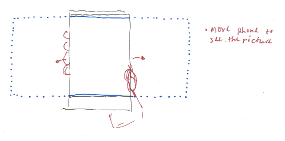
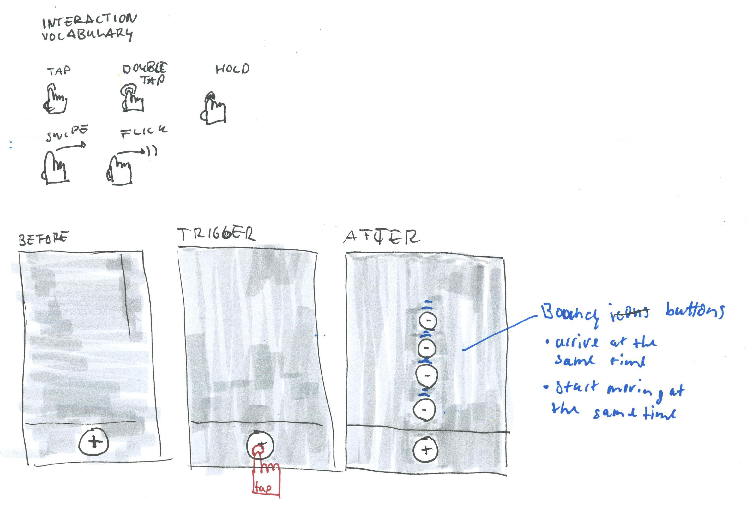
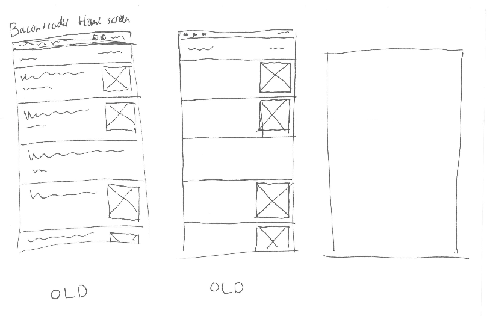
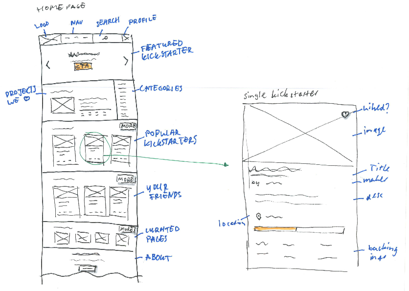
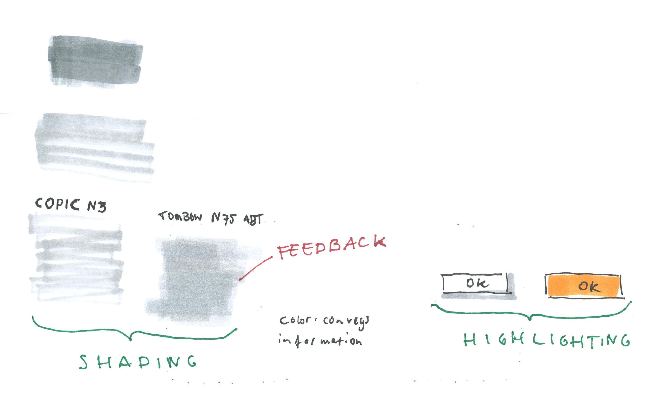
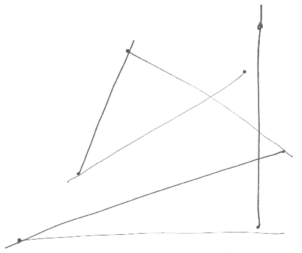
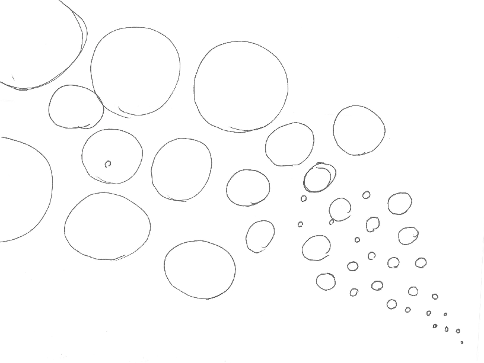
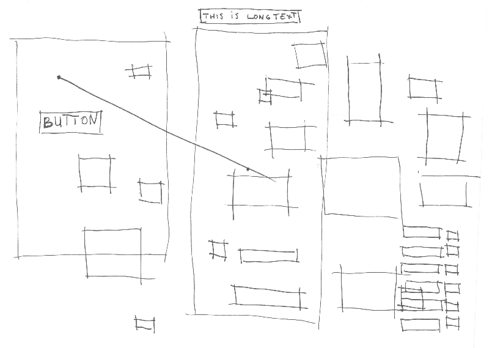
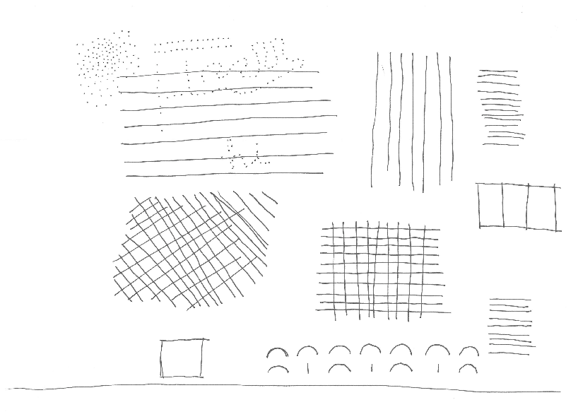
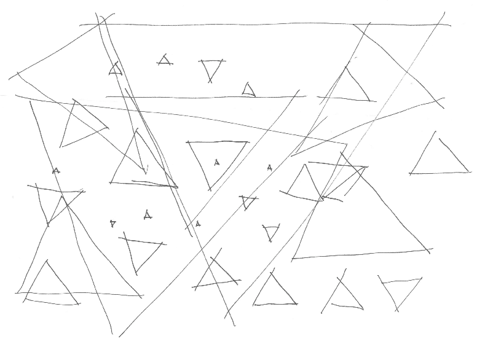

During a 3-hour workshop, Eva-Lotta taught us about interface sketching.

A sketch of using the tilt sensor on a phone.

Defining an interaction vocabulary and interaction states

Sketches made of a well known app, from memory. No peaking allowed.

Sketching a high level overview of a homepage. What are important things to note, and what can be left out.

Using highlighting and shading.

Playing a sketching game. Each draw a dot, and try to make a straight line towards the others' dot in one go.

Circles, circles, circles.

Drawing squares and how to draw text in boxes (text first, box last).

Drawing dots, straight lines and arches.

Triangles are hard. Ever tried to draw an even-sided triangle?